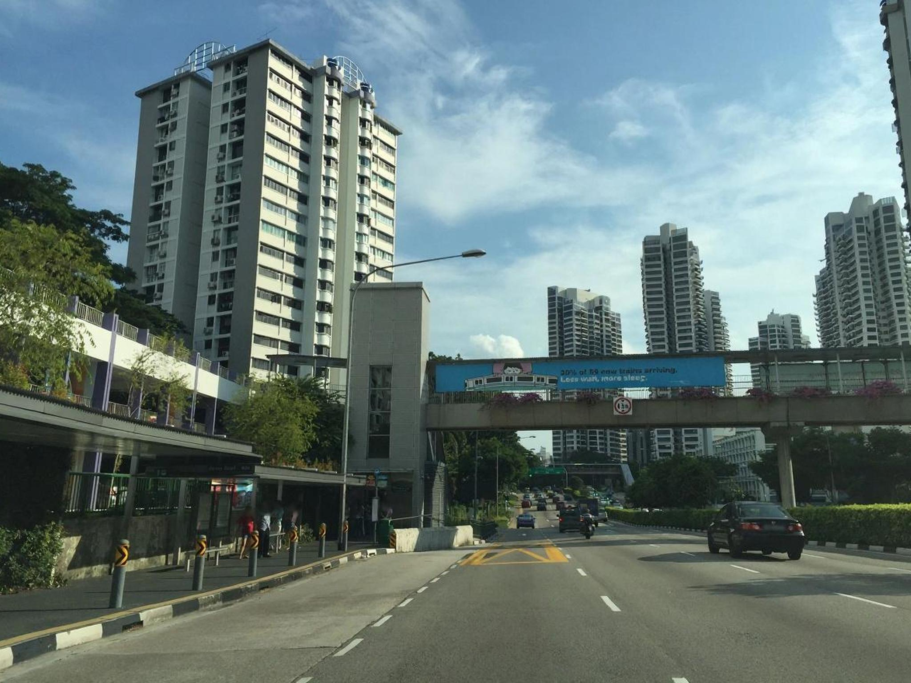
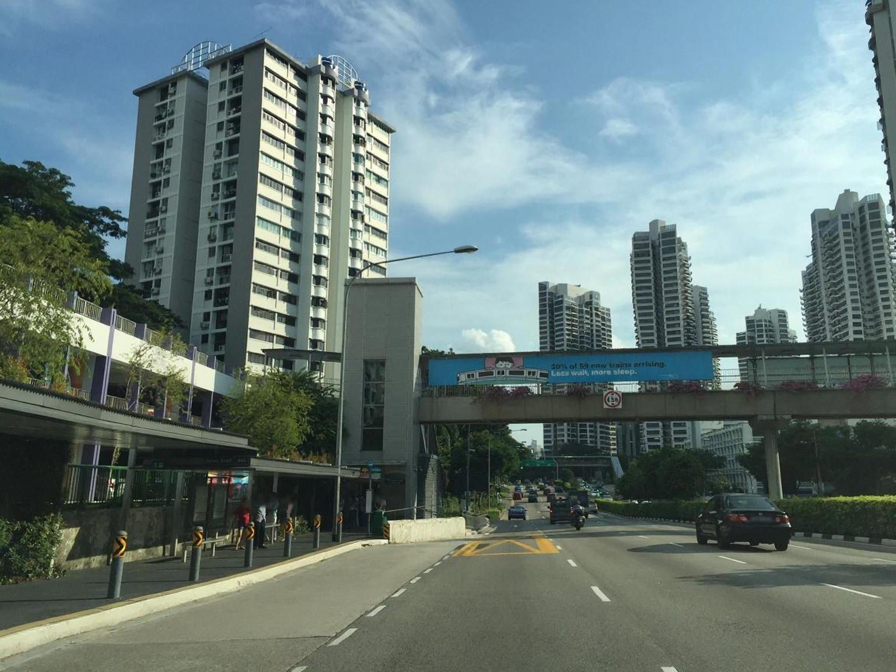
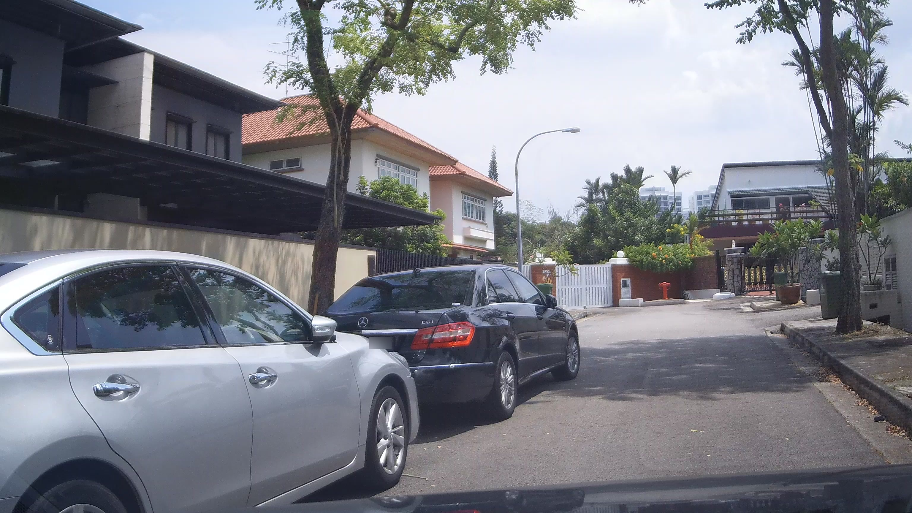
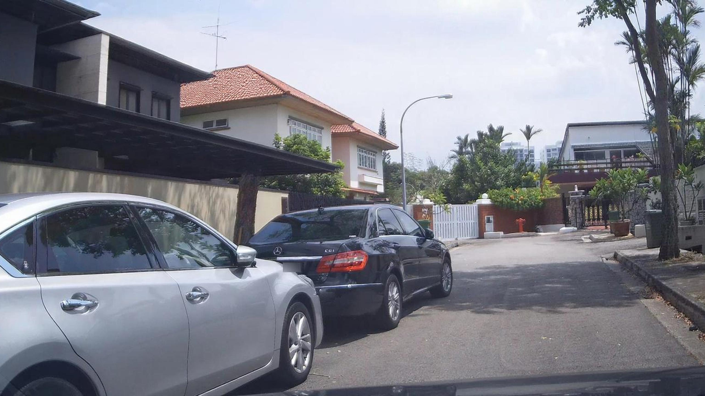
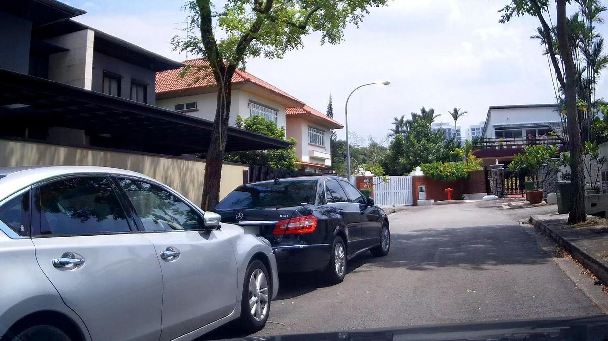
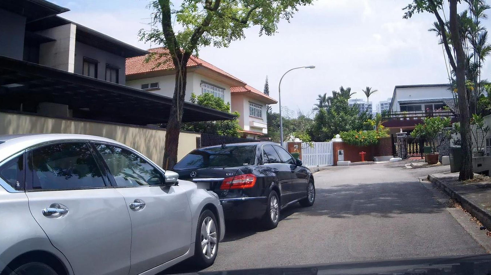
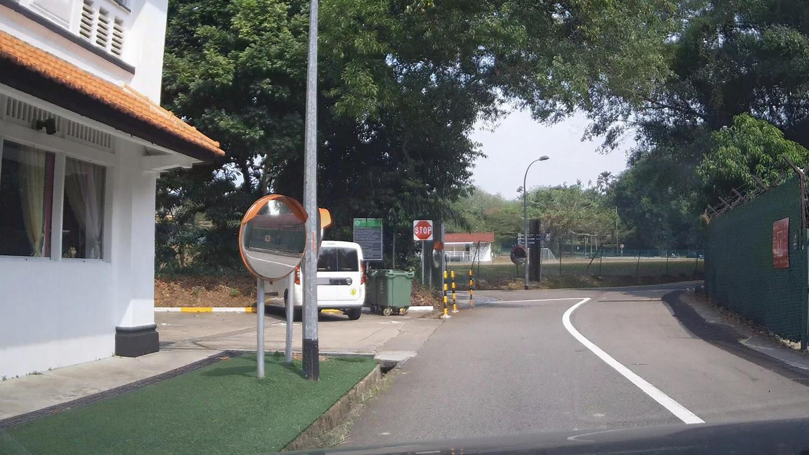
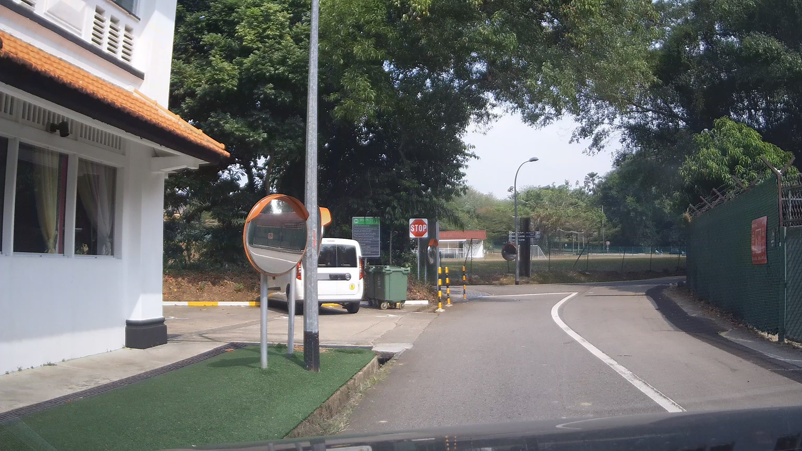
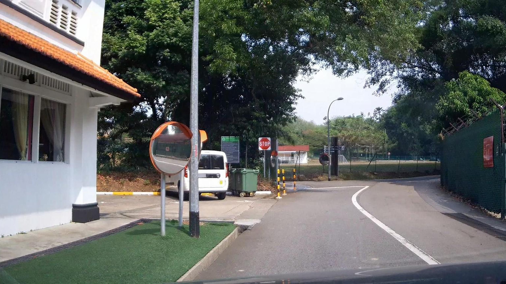

Streetview Counterfactual Evidence Pack
singapore pilot 3x3
Pair 01
Edited object: lane markings

/Users/jason_macstudio/streetview-counterfactual/data/01_raw/76d51909-0a1e-4a6b-b0bc-ef9e5d1781ab.jpeg

/Users/jason_macstudio/streetview-counterfactual/data/02_counterfactual/image_edit_baseline_20260324_213347_797363.jpg
Description
Increase contrast and crispness of the dashed lane lines on the near roadway so drivers can clearly read lanes.
Critic Notes
The scene/camera viewpoint and all major structures (buildings, bridge, vehicles) remain the same, so the place is preserved. However, the edit does not clearly repaint the dashed lane lines to bright white; the lane markings look largely unchanged (still relatively muted), while there appears to be a mild global tonal/contrast shift across the whole image. This makes the change not well-localized to the lane markings and not a plausible instance of 'lane marking repainting'. Repair: apply a targeted mask to the dashed lane lines on the near roadway and increase their whiteness/brightness and edge crispness (and only minimally affect surrounding asphalt), avoiding any global color/contrast changes.
Pair 02
Edited object: streetlight

/Users/jason_macstudio/streetview-counterfactual/data/01_raw/76d51909-0a1e-4a6b-b0bc-ef9e5d1781ab.jpeg
/Users/jason_macstudio/streetview-counterfactual/data/02_counterfactual/image_edit_baseline_20260324_213406_583438.jpg
Description
Make the streetlight head appear intact and operational to signal reliable nighttime illumination at this segment.
Critic Notes
The scene/location remains the same and there are no obvious geometric/viewpoint changes. However, the edit does not clearly repair or change the streetlight head—its shape/condition looks essentially the same, and there is no visible cue of being “functional” (e.g., intact lens/cover detail or a subtle daytime-appropriate glow). Also, the overall image appears slightly darker/contrast-shifted, which is a non-local/global change. Repair guidance: restrict edits strictly to the lamp head (restore/clarify the diffuser/lens, remove any implied damage) and avoid any global tone changes; optionally add a very subtle reflective highlight on the lens to imply intact hardware without making it look lit in daytime.
Pair 03
Edited object: sidewalk surface
/Users/jason_macstudio/streetview-counterfactual/data/01_raw/76d51909-0a1e-4a6b-b0bc-ef9e5d1781ab.jpeg

/Users/jason_macstudio/streetview-counterfactual/data/02_counterfactual/image_edit_baseline_20260324_213430_373494.jpg
Description
Remove dark streaks and dirt buildup along the curb and bus stop pavement to make the pedestrian area look maintained.
Critic Notes
The scene/camera viewpoint and major structures match (same place preserved). However, the edit appears to apply a broader global tonal/contrast change across much of the image (overall darker/shifted look), not a localized cleanup of the sidewalk/curb. There is no clear, confined removal of curb/sidewalk grime or dark streaks specifically at the bus stop pavement. To fix: restrict edits to the concrete sidewalk and curb region only, selectively reducing dark stains/streaks while keeping the rest of the scene (road, buildings, sky) unchanged in color/brightness.
Pair 04
Edited object: street tree canopy

/Users/jason_macstudio/streetview-counterfactual/data/01_raw/396b865a-fdf1-48f9-848b-18535199842b.jpeg

/Users/jason_macstudio/streetview-counterfactual/data/02_counterfactual/image_edit_baseline_20260324_213515_216745.jpg
Description
Reduce the tree canopy over the street by pruning branches that hang low above the driving path to improve visibility and perceived safety.
Critic Notes
The scene/layout (houses, cars, roadway, streetlight) is preserved, but there is no clear trimming of the overhanging street tree canopy—branches/leaves above the roadway look essentially unchanged. The main noticeable difference is a global tonal/contrast shift and slight smoothing, which is not a localized canopy-management edit. Repair: directly remove/prune only the low/overhanging branches extending over the driving path (especially the central-left canopy), keeping the rest of the scene and overall color/lighting consistent with the original.
Pair 05
Edited object: streetlight

/Users/jason_macstudio/streetview-counterfactual/data/01_raw/396b865a-fdf1-48f9-848b-18535199842b.jpeg

/Users/jason_macstudio/streetview-counterfactual/data/02_counterfactual/image_edit_baseline_20260324_213547_253802.jpg
Description
Make the existing streetlight appear maintained with an intact luminaire to suggest reliable nighttime illumination and safer conditions.
Critic Notes
The scene and viewpoint are preserved, but the edit introduces a noticeable global change (overall contrast/saturation/sharpness shift) across the whole image rather than being confined to the streetlight. The streetlight itself does not appear meaningfully “repaired” (no clear intact/updated luminaire detail; at most a subtle bright spot), and in daytime it’s hard to read as functional illumination. Repair guidance: keep the rest of the image identical and only modify the lamp head—add/restore a clean, intact luminaire cover and consistent housing geometry; avoid changing global color/contrast; optionally add a very subtle daylight reflection/glass highlight to imply it’s maintained rather than making it look lit.
Pair 06
Edited object: road surface

/Users/jason_macstudio/streetview-counterfactual/data/01_raw/396b865a-fdf1-48f9-848b-18535199842b.jpeg

/Users/jason_macstudio/streetview-counterfactual/data/02_counterfactual/image_edit_baseline_20260324_213609_753357.jpg
Description
Remove visible dirt and scattered debris from the asphalt to create a tidier, better-maintained street that reads as safer.
Critic Notes
The scene layout and viewpoint match, but the edit is not confined to the road surface: there is a noticeable global contrast/saturation/sharpness shift across cars, buildings, foliage, and sky. The roadway itself does not appear materially cleaner (debris/stain removal is minimal/unclear). To fix: keep overall color/contrast identical to the original and apply subtle inpainting only on the asphalt to remove small specks/stains while preserving road texture and shadows.
Pair 07
Edited object: road edge line

/Users/jason_macstudio/streetview-counterfactual/data/01_raw/89fd5dc2-0748-459b-9531-3b467b2dc04d.jpeg

/Users/jason_macstudio/streetview-counterfactual/data/02_counterfactual/image_edit_baseline_20260324_213637_318812.jpg
Description
Sharpen and brighten the existing white lane edge line along the curve so it appears freshly repainted and continuous.
Critic Notes
Same scene/camera preserved. The only noticeable change is the road edge line along the curve, which is brighter, cleaner, and more continuous, matching the repainting request. No global color/contrast shift or additional object changes are apparent. If anything, could add a slightly more reflective/retroreflective sheen in highlights, but current repaint look is credible.
Pair 08
Edited object: overhanging branches

/Users/jason_macstudio/streetview-counterfactual/data/01_raw/89fd5dc2-0748-459b-9531-3b467b2dc04d.jpeg
/Users/jason_macstudio/streetview-counterfactual/data/02_counterfactual/image_edit_baseline_20260324_213713_769457.jpg
Description
Reduce the tree canopy over the road by trimming back low branches to improve visibility around the curve while keeping the trees.
Critic Notes
Same roadway curve and surrounding elements (building, poles, mirror, stop sign, fence) are preserved. The edit appears confined to the overhanging canopy area above the bend, with slightly more open sky/sightline through the branches. No obvious global color/contrast shift or geometry change. Trimming looks visually coherent and plausible as tree canopy management; if anything, the trim effect is subtle—could be made slightly more noticeable by removing a bit more low-hanging foliage over the road while keeping branch structure consistent.
Pair 09
Edited object: curb and gutter

/Users/jason_macstudio/streetview-counterfactual/data/01_raw/89fd5dc2-0748-459b-9531-3b467b2dc04d.jpeg

/Users/jason_macstudio/streetview-counterfactual/data/02_counterfactual/image_edit_baseline_20260324_213738_861420.jpg
Description
Remove visible dirt and staining along the curb edge and gutter so the roadside looks maintained and safer.
Critic Notes
The place and scene layout are preserved, and the image remains visually coherent. However, the edit is not confined to the curb/gutter: there is a noticeable global contrast/saturation/sharpness increase across the whole frame (building, trees, road, etc.). Additionally, the curb/gutter does not appear specifically cleaned (no clear removal of dark grime/staining along the curb edge; the changes read more like overall regrading than targeted surface cleaning). Repair: revert global color/contrast changes and apply a localized edit mask only on the curb edge and roadside gutter to lighten/remove the dark grime while keeping surrounding asphalt/sidewalk tones consistent and preserving texture.